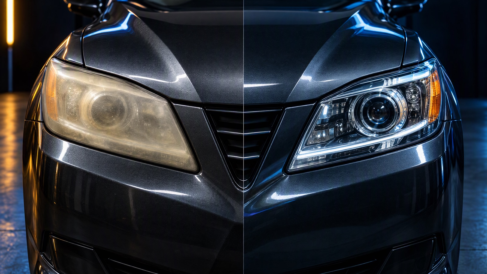
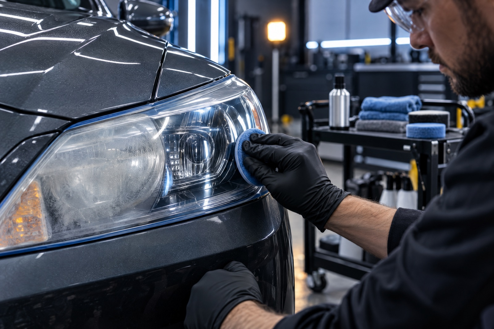

Headlight Restoration / Fremont
Bring back
the clarity.
Address oxidation and haze with a practical restoration process built around lens condition, finish and ongoing UV exposure.
What it is
Haze has a
reason.
Headlight lenses face sun, road contamination, heat cycles and weather. Over time, the factory UV-protective surface can oxidize, leaving lenses yellowed, dull or hazy.
Restoration addresses the affected surface through a progressive process, then applies protection intended to help the refreshed lens face future exposure.

Illustrative comparison
Move the line.
See the surface.
Use the slider to explore an illustrative before/after restoration view. Actual lens condition and results are evaluated individually.
Our Process
Restore the lens
in deliberate steps.
- 01 / Inspect
Evaluate
Review yellowing, haze, surface defects and the condition of the lens before beginning.
- 02 / Level
Sand
Use a controlled progression to remove the damaged outer surface where restoration is appropriate.
- 03 / Refine
Polish
Restore optical clarity through progressive refinement of the prepared lens surface.
- 04 / Protect
Seal
Apply UV-focused protection as the final step in the restoration process.
Visibility is part of the drive.
Clouded headlight lenses can scatter light and reduce the useful clarity of the lamp. Restoration is a cosmetic and practical maintenance step; it does not replace inspection of bulbs, housings, aiming or vehicle electrical systems.
Start with a photo